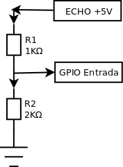

RaspBerry Pi - Sensor de Distância Ultrassônico HC-SR04
dom 05 outubro 2014 RaspberryPi / HC-SR04 / Sensor /
RaspBerry Pi - Sensor de Distância Ultrassônico HC-SR04
Galera, esse é o meu primeiro post com o RaspBerry Pi B+, nele vou descrever como conseguir medir a distancia de algum objeto utilizando os raspberry pi e o sensor ultrassônico HC-SR04.
Você vai precisar de:
- Raspberry Pi
- Sensor Ultrassônico HC-SR04
- Resistor de 1kΩ
- Resistor de 2KΩ
- Jumpers
** HC-SR04**
O HC-SR04 é um sensor ultrassônico, capaz de detectar coisas e medir a distância do sensor até o item. A sua distância varia de mais ou menos 1 cm até 500cm (ou seja, 1cm até 5m), tendo uma precisão de 3mm. É aconselhável usar como alcance máximo 200mm, pois dessa forma tem uma grande alcance com uma ótima precisão. Assim como outros sensores de distância, o HC-SR04 vem com um emissor e um receptor de sinais ultrassônico. Para verificar a distância, o sensor emite um sinal que bate no objeto e volta para o receptor, obtendo assim um tempo. O cálculo que efetuamos é Velocidade = Distância / Tempo.
Para começar a medição é necessário alimentar o módulo e colocar o pino Trigger em nível alto por mais de 10us. Assim o sensor emitirá uma onda sonora que ao encontrar um obstáculo rebaterá de volta em direção ao módulo, sendo que o neste tempo de emissão e recebimento do sinal o pino ECHO ficará em nivel alto. Logo o calcula da distância pode ser feito de acordo com o tempo em que o pino ECHO permaneceu em nível alto após o pino Trigger ter sido colocado em nível alto.
Distância = [Tempo ECHO em nível alto * Velocidade do Som] / 2
A velocidade do som poder ser considerada idealmente igual a 340 m/s, logo o resultado é obtido em metros se considerado o tempo em segundos. Na fórmula a divisão por 2 deve-se ao foto que a onda é enviada e rebatida, logo ela percorre 2 vezes a distância procurada.
Divisor de Voltagens
O raspberry pi diferente do arduino, trabalha com o valor de entrada em 3.3v por isso devemos utilizar os resistores. Abaixo segue um diagrama de como irá ficar o esquema de ligação.

{kind=link}
V saida = V entrada X R2/R1+R2 V saida/V entrda = R2/R1 + R2
Vamos efetuar o cálculo, mas antes vamos levantar os valores, V saída = 3.3V, V entrada = 5v e R1 = 1000.
3.3/5 = R2/1000+R2 0.66 = R2/1000+R2
0.66(1000+R2) = R2 660 + 0.66R2 = R2
660 = 0.34R2 1941 = R2
{kind=link}
Mão na massa
Vamos efetuar a ligação do sensor aos jumpers.
{kind=link}
Se for seguir a minha sequência, preno no ground, amarelo no echo, azul no trigger e vermelho no vcc (5V).
Ou pode ligá-lo também direto na protoboard.
{kind=link}
Optei por deixar o sensor direto na protoboard para deixá-lo fixo e facilitar o testes, feito isso, liguei o pino 2 e 6 respectivamente nas colunas positivo e negativo e fiz o jumper do vcc e ground do sensor na coluna de alimentação.
{kind=link}
Próximo passo é ligar o trigger em uma coluna vazia na protoboard e em seguida conectá-lo ao pino 16 ou GPIO 23 na placa.
{kind=link}
Conecte o ECHO em uma coluna vazia ligado a uma perna do resitor R1.
{kind=link}
Conecte outro jumper na segunda perna do resistor e ligue-o ao pino 18 ou GPIO 24, na mesma coluna ligue o R2 (resistor de 2k) após o jumper e conecte no ground ficando assim. No meu caso como tinha apenas resitor de 1k liguei em paralelo para chegar aos 2k necessários.
{kind=link}
No final deve ficar algo parecido com a imagem acima.
Agora vamos conectar no nosso raspberry pi via ssh e começar a escrever nosso script para ler a distancia com o sensor.
{kind=link}
Srcipt Python
import RPi.GPIO as GPIO
import time
GPIO.setmode(GPIO.BCM)
TRIG = 23
ECHO = 24
print "Mensurando a Distancia"
GPIO.setup(TRIG,GPIO.OUT)
GPIO.setup(ECHO,GPIO.IN)
GPIO.output(TRIG,False)
print "Aguardando o Sensor Estabilizar"
time.sleep(2)
GPIO.output(TRIG, True)
time.sleep(0.00001)
GPIO.output(TRIG, False)
while GPIO.input(ECHO)==0:
pulse_start = time.time()
while GPIO.input(ECHO)==1:
pulse_end = time.time()
pulse_duration = pulse_end - pulse_start
distance = pulse_duration * 17150
distance = round(distance, 2)
print "A distancia eh: ",distance, " cm"
GPIO.cleanup()
Comentando o Script
Vou detalhar abaixo o scritp utilizado.
Importamos a biblioteca python GPIO, iportado a biblioteca time e setamos o modo da pinagem que o raspberry irá interpretar que é BCM.
import RPi.GPIO as GPIO
import time
GPIO.setmode(GPIO.BCM)
Definimos os pinos BCM de TRIG e ECHO como 23 e 24.
TRIG = 23
ECHO = 24
Vamos imprimir a mensagem que o scritp está mensurando a distancia.
print "Mensurando a Distancia"
Vamos setar o TRIG e ECHO como saída e entrada respectivamente.
GPIO.setup(TRIG,GPIO.OUT)
GPIO.setup(ECHO,GPIO.IN)
Certificamos que o TRIG está como "falso" para não transmitir nenhuma informação inconsistente e damos 1 segundo para ele estabilizar.
GPIO.output(TRIG,False)
print "Aguardando o Sensor Estabilizar"
time.sleep(2)
O sensor precisa de um pulso de 10 micros-segundos para iniciar a medição e o ECHO responder o tempo que o sinal percorreu e voltou para o sensor (O sensor dispara 8 rajadas a 40 kHz), e setamos novamente o pino como Falso para parar a medição.
GPIO.output(TRIG, True)
time.sleep(0.00001)
GPIO.output(TRIG, False)while GPIO.input(ECHO)==0:
pulse_start = time.time()
O sensor mede a distancia baseado no tempo em que o ECHO permanece com o status High ou 1, portanto na variável pulse_start armazenamos o ultimo timestamp (a função time.time() armazena o ultimo timestamp na variável declarada) para comparar posteriormente com a variável pulse_end.
while GPIO.input(ECHO)==0:
pulse_start = time.time()
A variável armazena o ultimo timestamp na variável pulse_end para ser subtraído a variável pulse_start.
while GPIO.input(ECHO)==1:
pulse_end = time.time()
Agora vamos calcular a diferença entre as duas variáveis e determinar quanto tempo o ECHO ficou ativo.
pulse_duration = pulse_end - pulse_start
Como dito no início da postagem, vamos utilizar o cálculo Velocidade=Distancia/Tempo como sabemos que a velocidade do som é 340m/s vamos converter para cm/s ficando 34300, dividimos esse valor por 2 já que calculamos o tempo de ida e volta do sinal, e para encontrar a distancia multiplicamos pelo tempo que o sinal levou parar ir e voltar.
distance = pulse_duration * 17150
Para melhor legibilidade vamos definir nossa distancia com apenas 2 casas decimais.
distance = round(distance, 2)
Vamos agora apresentar a distancia na tela.
print "A distancia eh: ",distance, " cm"
E por ultimo limpamos as configurações feitas para os pinos GPIO.
GPIO.cleanup()
Feito isso só salvar e executar o nosso script para mostrar a distancia.
{kind=link}
{kind=link}
Em um próximo post vou tentar interagir com LEDS ou Buzzer para melhorarmos nosso script.
Este obra de Emilio Eiji está licenciado com uma Licença Creative Commons Atribuição-NãoComercial-CompartilhaIgual 4.0 Internacional.